00縮寫速查表
全文出現過的縮寫，按主題分組——讀到卡住就跳回來查
學習範式
| 縮寫 | 全名 | 意思 |
|---|---|---|
| RL | Reinforcement Learning（強化學習） | 不給示範，讓系統自己試錯：做對給 reward、做錯給懲罰，policy 朝「長期報酬最大」的方向更新。P2 全篇的主角。 |
| BC | Behavior Cloning（行為克隆） | 模仿學習的最基本形式：收集人類（遙操作）示範，用監督式學習訓 policy 去複製示範動作。快但有天花板——速度、品質被示範者鎖死，也學不到「失敗的代價」。 |
| DAgger | Dataset Aggregation | 模仿學習的迭代改良法：讓 policy 自己跑、專家對它犯錯的狀態給出正確動作、把這些修正併回資料集再訓。解決「policy 一偏離示範分佈就沒資料可學」的問題。 |
模型與架構
| 縮寫 | 全名 | 意思 |
|---|---|---|
| LLM | Large Language Model（大型語言模型） | 吃文字、出文字的大模型（GPT、Claude、Gemini 這類）。文中 System 2 用的「frontier model」就是最強一批的 LLM。 |
| VLM | Vision-Language Model（視覺語言模型） | 在 LLM 上加視覺輸入：吃圖＋文字、出文字。網路級圖文預訓練給了它認物體、懂場景、聽指令的先驗。 |
| VLA | Vision-Language-Action model | 再往前一步：吃相機畫面＋語言指令＋機器人狀態，直接輸出機器人動作的神經網路。通常拿 VLM 當 backbone、接上 action head。KinetIQ System 1 的本體。 |
| CLS token | classification token | Transformer 慣例：在輸入序列前掛一個特殊 token，訓練後它會匯聚整個序列的資訊。P2 的 critic 就是讀一個可訓練的 CLS token、過線性層輸出 value 估計。 |
| FSM | Finite State Machine（有限狀態機） | 「狀態＋轉移條件」的離散流程模型。出現在筆記節：我們的食譜 FSM。 |
生成式動作頭與 RL 演算法
| 縮寫 | 全名 | 意思 |
|---|---|---|
| CFM | Conditional Flow Matching（條件流匹配） | 與 diffusion 同族的生成技術：學一個「速度場」，把隨機噪聲沿著它積分、逐步變形成目標輸出（這裡是動作軌跡）。擅長表達「同一情境有多種合理動作」的多峰分佈——π0.5、GR00T N1 等頂尖 VLA 的 action head 都用它。 |
| ODE / SDE | Ordinary / Stochastic Differential Equation（常微分／隨機微分方程） | CFM 採樣本質上是解一條確定性 ODE——給定噪聲起點，結果唯一，算不出「這個動作的機率」。在每步積分注入高斯噪聲就變成 SDE，每步有可解的高斯密度 → RL 需要的 log-prob 有了，噪聲還順便當探索。 |
| PPO | Proximal Policy Optimization（近端策略優化） | 目前最通用的 policy-gradient RL 演算法（也是 LLM RLHF 的主力）：用「新舊 policy 機率比」加權更新，並把這個比值 clip 在小範圍內，防止單次更新走太遠而崩潰。 |
| GAE | Generalized Advantage Estimation（廣義優勢估計） | PPO 的標準配件：計算「這個動作比平均好多少」（advantage）時，在偏差與變異之間用一個 λ 參數折衷。 |
| Flow-GRPO / Flow-SDE / πRL | — | 非縮寫、是方法名：近一年把 RL 接上流匹配 policy 的幾篇代表作。P2 實測後棄用 Flow-GRPO（極度樣本低效），最終方案「近似 Flow-SDE 的 PPO」。 |
控制與硬體
| 縮寫 | 全名 | 意思 |
|---|---|---|
| IK | Inverse Kinematics（逆運動學） | 古典機器人學：給定末端（手掌／夾爪）想到達的位置與姿態，反解出各關節該轉多少度。「逆」是相對於正運動學（給關節角算末端位置）。優點：可顯式下硬約束、行為可預測——KinetIQ 上半身控制的基礎。 |
| FPS | frames per second | 本文特殊用法：不是畫面幀率，是 policy 動作序列的執行頻率。用高於資料採集的 FPS 播放＝sport mode，機器人動得比示範快。 |
| wrench | 力旋量 | 非縮寫、是術語：力＋力矩的六維合稱。P2 監控手腕 wrench 超閾值就急停縮手（痛覺反射）。 |
| H100 / Hopper / Blackwell | — | NVIDIA 資料中心 GPU：H100 屬 Hopper 世代，Blackwell 是下一代。P2 的 trainer 跑在這些上面。 |
| Jetson Thor | — | NVIDIA 的機器人邊緣運算模組——裝在機器人身上跑推論的那顆電腦。與 trainer GPU 的數值差異就是「sampler-trainer gap」的來源。 |
| UMI | Universal Manipulation Interface | 手持夾爪式資料收集裝置（Stanford／TRI 系工作）：人拿著它做任務就能收操作示範，不需要真的開機器人。Humanoid 把 UMI 相容性直接寫進硬體設計需求。 |
| HMND 01 | — | Humanoid 公司的機器人產品型號。 |
| GR00T / π0.5 / MolmoAct | — | 開放 VLA 模型名：NVIDIA GR00T N1（及 N1.7）、Physical Intelligence π0.5、AI2 MolmoAct（Anthropic 那篇拿來被監督的 policy）。 |
營運與評測
| 縮寫 | 全名 | 意思 |
|---|---|---|
| UPH | Units Per Hour（每小時件數） | 工業吞吐指標——機器人在產線上「值不值錢」的直接量尺。 |
| A/B | A/B testing（A/B 測試） | 兩組同期對照實驗。P2 用約 10% 額度跑凍結舊 policy 當同期基線，把「環境漂移」從「訓練增益」裡剝出來。 |
| WMS | Warehouse Management System（倉儲管理系統） | 管庫存、揀貨、上下架的企業軟體；System 3 要對接的外部系統之一。 |
| EMS | （製造端平台，原文未展開） | 依上下文指工廠端的生產調度／製造服務平台（如 Electronics Manufacturing Services 電子代工），特點是按單即時重排產能。 |
| API | Application Programming Interface（應用程式介面） | 程式對程式的呼叫介面；「API 推論」＝走網路呼叫雲端模型。 |
| GVL | Generative Value Learning | 筆記節引用的方法：讓 VLM 零訓練直接對影片幀輸出「任務完成百分比」——與 P2 的 time-to-completion value head 同一思路。詳見狀態偵測八篇對讀。 |
0130 秒速覽
一句話：架構篇給「分層」，Ascend 篇給「真機 RL 把 BC 天花板打穿」的第一手工程記錄
- P1（架構篇）：借 Kahneman 的 System 1/2 術語擴成四層。最有辨識度的兩個設計：上半身用古典 IK（跨平台共用、可下硬約束）、下半身用 RL 步態（把上身動作當外部擾動）；System 2 直接用擅長 tool-use 的 frontier 大模型當單機大腦。
- P2（Ascend 篇）：在生產級 CFM VLA 上跑真機 PPO，宣稱是「據我們所知，第一個發表的、在真實雙臂人形硬體上對生產 VLA 做端到端視覺 RL」。三個任務、每個只花 3–5 天機器時間；交付與搬箱的成功率推到 98–99%，上料的主指標是吞吐（+42%）。
- 兩個超出預期的發現：只對任務最難的片段做 RL，整條任務都變好（沒練的部分不退化）；只用一種物體（水瓶）練，沒見過的罐頭 +40%——RL 改善的是「揀取」這個通用技能，不是過擬合單一物體。
- 工程含金量最高的三節：prefix conditioning 在 RL 下的隱性崩壞（沒人發表過的失敗模式）、真實環境非平穩性要用 10% 額度跑凍結基線做線上 A/B、edge（Jetson Thor）與 trainer（Hopper/Blackwell）的數值差異會毒化 PPO importance ratio——在 trainer 端重算 log-prob 解掉。
- 商業邏輯：目標 99.9% 成功率 @ 人類或超人速度；部署後車隊繼續用同一套 RL loop 自我改進，主管介入＝負 reward，每台部署機器人都是 rollout worker。
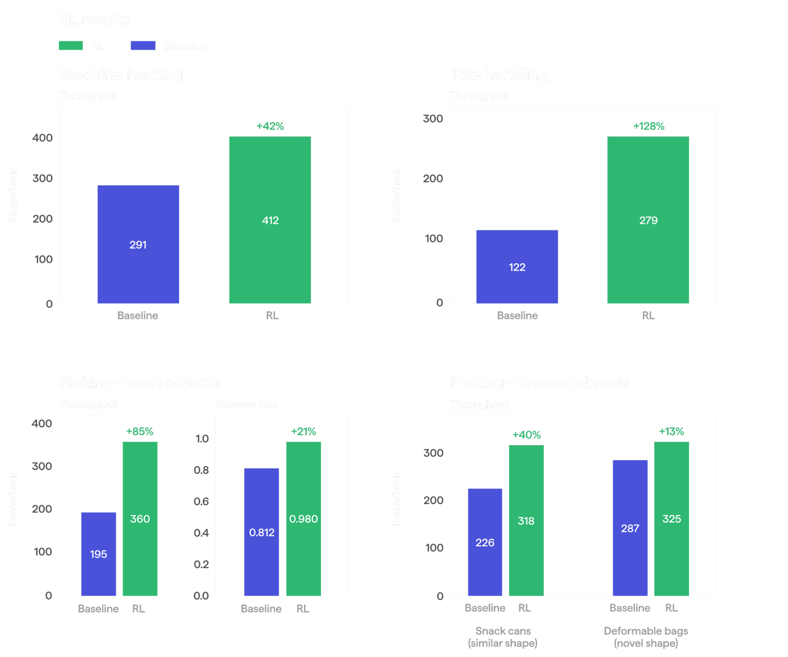
02先回答：model 有公開嗎？——沒有，一項都沒有
查證日期 2026-07-22 · HuggingFace / GitHub / arXiv / 官網與新聞稿全查
| 項目 | 狀態 | 查證細節 |
|---|---|---|
| 自家模型權重 | ✗ 無 | HuggingFace 搜 kinetiq、HMND 皆空；無官方 HF 組織（thehumanoid → 404） |
| 程式碼 / SDK | ✗ 無 | GitHub 搜 kinetiq 231 個結果全是同名無關專案（ERP、健身 app…）；無官方 GitHub org、無開發者計畫 |
| 資料集 | ✗ 無 | HF datasets 無；無任何資料釋出公告 |
| 論文 | ✗ 無 | arXiv 搜 KinetIQ / HMND 01 / thehumanoid.ai 零命中——這兩篇「technical deep dive」是部落格文，結尾是徵才不是釋出 |
| 使用別人的開放模型 | ✓ 有 | GTC 2026-03 公告採用 NVIDIA Isaac GR00T N1.7（開放 reasoning VLA）與開放的 Isaac Sim / Isaac Lab，edge 用 Jetson Thor；Ascend 文中把 π0.5、GR00T N1 引為 CFM VLA 的 prior art |
媒體報導（如 humanoid.press 資料庫）一律把 KinetIQ 描述為 proprietary。P1 文中只說 System 1 的 VLA「用一個 VLM 當 backbone」，連是哪個 VLM 都沒講；3B 參數量與 34ms 推論延遲（同樣出自 P1）已是公開的全部細節。定位很清楚：這家公司走「軟體實力＝護城河」路線，公開的是工程經驗（部落格寫得相當坦白），不是資產（模型、碼、資料全留在牆內）。
03P1System 0–3：四層認知架構
借 Stanovich/West → Kahneman 的雙系統術語，擴成機器人版的四層
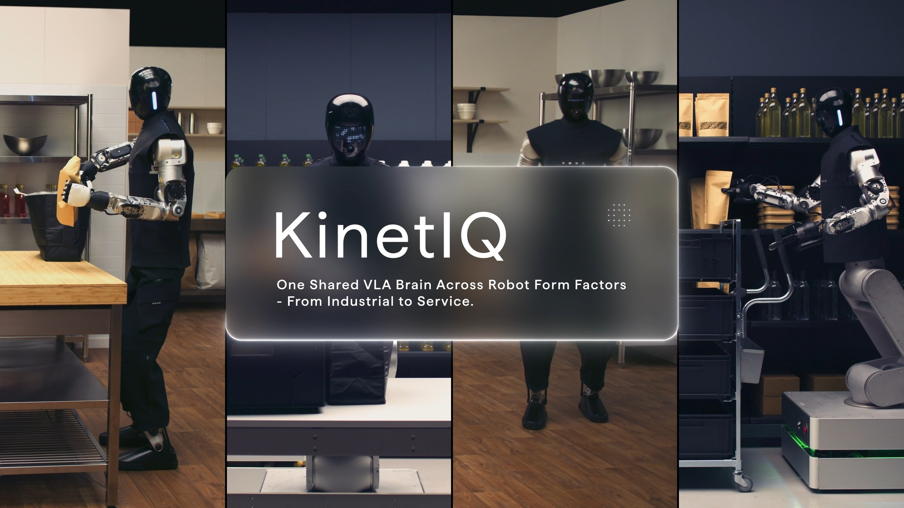
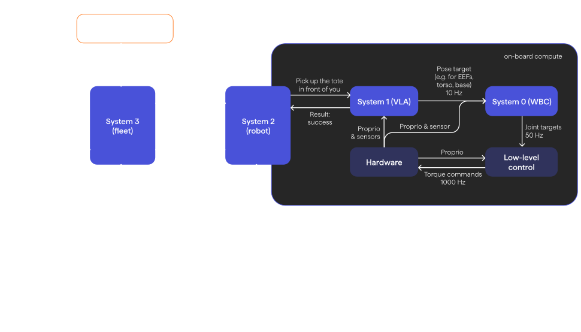
把多台機器人當工具，完成外部定義的 fleet 級目標（訂單、工單）。時間尺度：秒～分鐘以上。
協調一台機器人，把導航、移動操作等能力當 agentic 工具呼叫。純離散符號狀態，不碰連續控制。
把 System 2 給的自然語言目標（「lift the tote」）轉成目標姿態（末端執行器、軀幹、骨盆），10Hz。
達成 System 1 給的目標姿態，同時維持動態穩定，50Hz；底下還有 1kHz 的柔順低階控制層吸收衝擊。
作者自己預告：「層與層的邊界會隨時間越來越模糊」——但以當前 AI 技術狀態，這個分解在「做得出來的能力」和「系統透明度」之間取了平衡，對一家商業公司來說是 time-to-market 的考量。誠實。
04P1System 0：IK 上身 + RL 下身的混合全身控制
上半身跨平台共用、下半身各自為政——為了讓 VLA 無痛跨機身
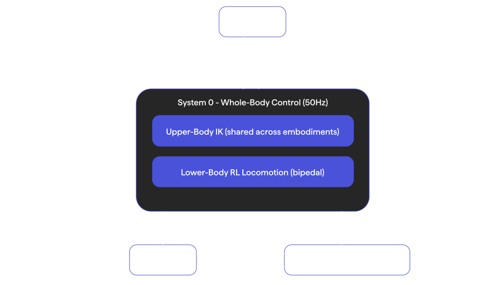
為什麼上身堅持用古典 IK 而不是全學習？兩個理由值得抄：
- 執行期可配置。IK 的冗餘解算可以顯式調——精密任務偏向只動手臂、需要延伸範圍時才動軀幹，用「控制器變體 + 參數」暴露給上層。
- 硬約束可保證。policy 層很難可靠保證的幾何約束，IK 層做得到。例：雙手搬塑膠箱（tote）時強制鎖定兩個末端執行器的相對位姿，物體姿態全程不變形、不施加過大的力——System 1 可以按需開關這種「約束模式」。
雙足下身是純模擬訓練的 RL policy：把上身動作當外部擾動處理，以骨盆為主要運動參考。System 1 透過「目標骨盆位姿」介面影響走、轉、蹲，平衡與復原則由下身 policy 自主解決。訓練上的一個反主流選擇：刻意少用 domain randomization，改靠精確的系統辨識（system identification）對齊模擬與真實動力學——得到「不保守、但穩」的步態。
還有一個伏筆：System 0 用「目標姿態」當輸入介面，天然對齊末端執行器空間的資料來源——UMI 式手持夾爪、第一人稱影片。他們的硬體設計明確要求 UMI 裝置盡量貼近現有機器人的運動學，把 embodiment gap 壓低。資料策略藏在控制介面的選擇裡。
05P1System 1：自建 VLA——CFM head、非同步推論、能力工廠
VLM backbone + 可換的 action head · 3B 模型 H100 上 34ms · edge 部署導向
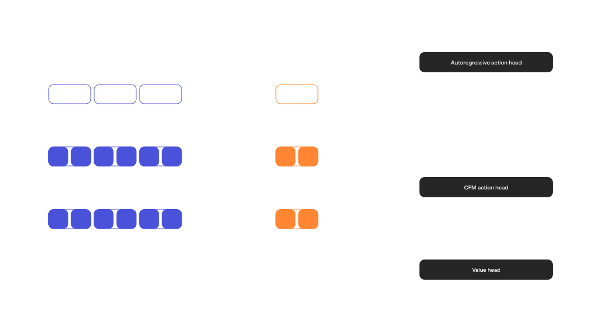
- Action head 刻意做成可插拔。CFM（conditional flow matching）head 微調到新任務又穩又快——3B CFM VLA 在 H100 上推論 34ms。但 CFM 的 RL 還不成熟，autoregressive head 能直接接上 LLM 界磨了多年的 RL 工具鏈——所以同一個 backbone 同時支援兩種 head。（這個「head 不可知」的堅持，在 P2 的 prefix conditioning 設計裡再次出現。）
- VLM backbone 不是終點。作者直說 VLM 對動力學和物理感知差——訓練訊號太靜態、太高層。他們押注影片生成 backbone（引 mimic-video、Cosmos Policy）會補上這塊，架構已預留無痛換模的空間。
- Value head 預測 time-to-completion。除了出動作，再訓一個頭預測「距離成功還剩幾步」：數字持續下降＝順利，躺平＝出事，訊號回流 System 2 觸發重試/換策略/上報。還能對單一動作估值——推論時採樣多個 action chunk、挑「會更快成功」的那個，用推論算力換 policy 表現。
非同步推論與 prefix conditioning
雲端推論有網路延遲抖動，同步推論會走走停停，更會把 policy 推出訓練分佈。解法是非同步：上一個 chunk 還在執行時就預測下一個。但這樣模型是拿「舊世界」在做預測——chunk 交接處會有頓挫。已知解法（diffusion 圈的 real-time chunking / inpainting）只適用 CFM，他們要 head 不可知，所以自創 prefix conditioning：把「推論期間會被執行掉的那段動作」當額外輸入餵給模型，訓練時模型學會把這段照抄進輸出、然後平滑接續。訓練時隨機採樣 prefix 長度 → 一個模型容忍各種延遲條件。
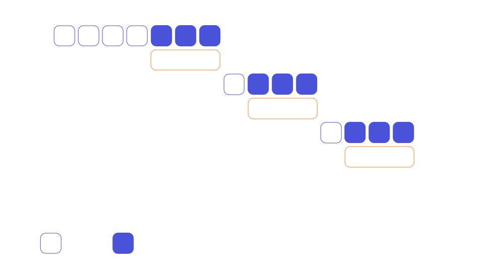
能力工廠（capability factory）
對 VLA 的零樣本泛化不抱幻想：「zero-shot generalization to arbitrary novel behaviors remains out of reach for VLA technology for now」。商業解法是把「快速造出新行為」工具化：資料收集、整理、標注、訓練、評測一條龍，目標是讓沒有工程學位的 robot trainer 用幾小時、幾個示範就能養出一個部署級行為。遙操作和自主執行走同一套記錄棧，DAgger、拿成功 rollout 回訓都很自然。兩個具體技巧：
- Behavior gluing：一個 prompt 對應的行為可以由多個子行為拼成。機台上料裡「揀」難而吃資料、「搬」簡單——把示範資料集中花在難的那段，不用收端到端長示範，也不用把子行為調度推給 System 2 增加複雜度。
- Sport-mode 資料前處理：想讓 policy 跑得比示範快，直接加速執行會壞事——夾爪本來就在最大速度運轉，手臂加速後會「還沒夾到就開走」。解法：在資料端做非線性加速，脆弱片段（抓取）保持 1x，其餘加速——做成 recipe 給 curator 一鍵套用。
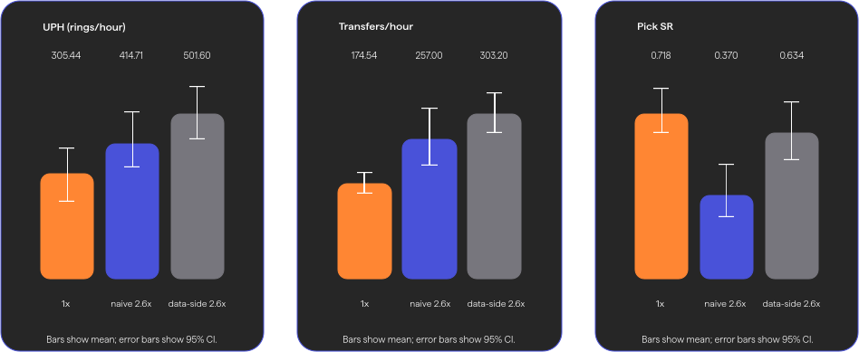
但文末已經預告：各種 recipe 都是過渡，長期押注 RL 才是打穿模仿學習天花板的正路——這就是四個月後 P2 的主題。
06P1System 2/3：frontier model 執行層 + Petri-net 車隊調度
單機大腦是「會用工具的 LLM」，車隊大腦是「有記憶和策略的 Petri net」
System 2：一切皆工具
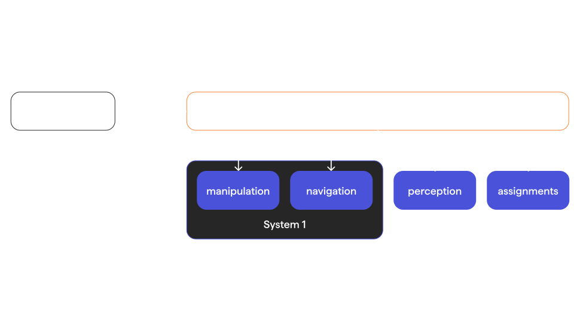
- 直接用 frontier 大模型。「Our layered approach allows us to leverage state-of-the-art frontier models for System 2 which excel at tool-use.」因為 System 2 只碰離散符號狀態，對網路延遲跟抖動皆穩健——所以可以用又大又慢的雲端模型。
- 失敗是常態不是例外。每次工具呼叫都被進度訊號監控（含 System 1 的 value 預測），依訊號決定續跑/重試/換策略/上報 System 3。「機器人不需要完美的模型或 policy，只需要夠豐富的工具箱＋會隨機應變的控制層。」
- 人在迴路＝換人拿工具。操作員用自然語言下新指示、給提示、做修正，不用全程遙操作；這些介入被記錄下來餵資料飛輪，讓系統將來自己會恢復。
System 3：工作流是活的
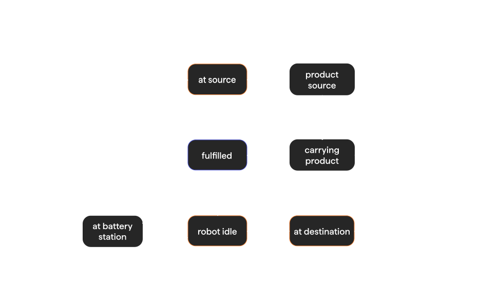
與傳統自動化管線的差異：工作流不是固定腳本，是執行期可演化的活物件——機器人故障或復原、任務超時、人為介入、優先級變動，都靠啟用/停用 transition 重塑執行。排程是連續指派問題：不求全域最優解，維護一個滾動的工作分配，決策「軟且可逆」。外部系統（WMS、EMS、dashboard）的輸入被當成一等公民 transition；反向也持續回報執行狀態——雙向回饋讓 System 3 慢慢從「手工編排」演化成「資料驅動調度」。
07P2為什麼模仿學習到不了 99.9%
目標：99.9% 成功率 @ 人類或超人速度——BC 的三個天花板
工業產線的門檻不講情面：一台機器人在工位上一天重複幾千次，要嘛幾乎不失敗、跟得上人的節奏，要嘛沒有存在價值。行為克隆（BC）撐到今天，但三個結構性天花板擋在部署前面：
① 速度與品質被示範者鎖死
policy 繼承遙操作資料的速度上限。直接加速播放撞物理：夾爪最快就那麼快，加速後手臂「還沒抓穩就走人」。P1 的 sport-mode 資料前處理是啟發式，推太猛就失效。
② 被動模仿學不到「失敗的代價」
BC 只看好行為，從不知道壞行為多貴。「學會做什麼，幾乎沒學到不該做什麼」——這在安全問題上最致命。
③ 因果混淆（causal confusion）
操作員決策時用的資訊（長期記憶、更多算力、不同視角）policy 看不到，模仿就會抓到「可見但虛假的相關訊號」。熟悉場景完美，相關性一斷就崩。
RL 三個都正面解：對顯式 reward 做試錯，在真實物理動力學裡優化，不被示範綁住 → 速度與品質都能超過示範者；虛假相關遲早導致任務失敗 → RL 偵測並壓制，直接打長尾。KinetIQ 本來就在 System 0 用 RL 練步態，Ascend 把 RL 沿著棧往上推到 System 1 的操作 VLA。
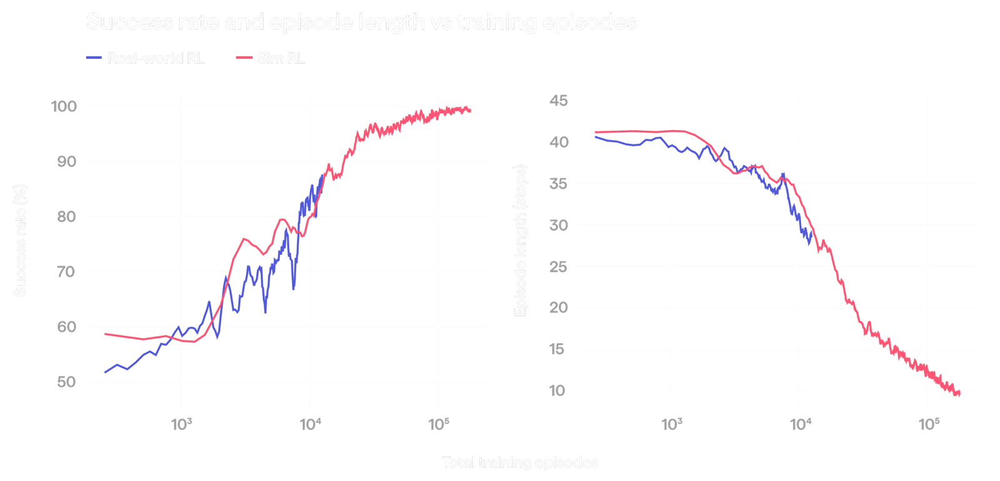
08P2演算法：PPO × 流匹配、prefix loss
CFM policy 的 log-prob 不可解 → ODE 轉 SDE · 已發表方法全數不夠用 · 一個沒人寫過的失敗模式
基礎設施：訓練與推論徹底分離
一個廠區可能同時幾百台機器人，把即時相機流全部推到資料中心不現實 → 推論在機上（Jetson Thor）。RL 棧配合同一約束：trainer 在雲端伺服器持有權重跑更新，rollout 收集委託給薄介面後的 worker——worker 連上來、拉權重、跑 rollout、回傳 transition。worker 可以是機器人上的 Jetson，也可以是雲端模擬器，同一次訓練可以同時吃真機和模擬的 rollout。吞吐隨 worker 數擴展。
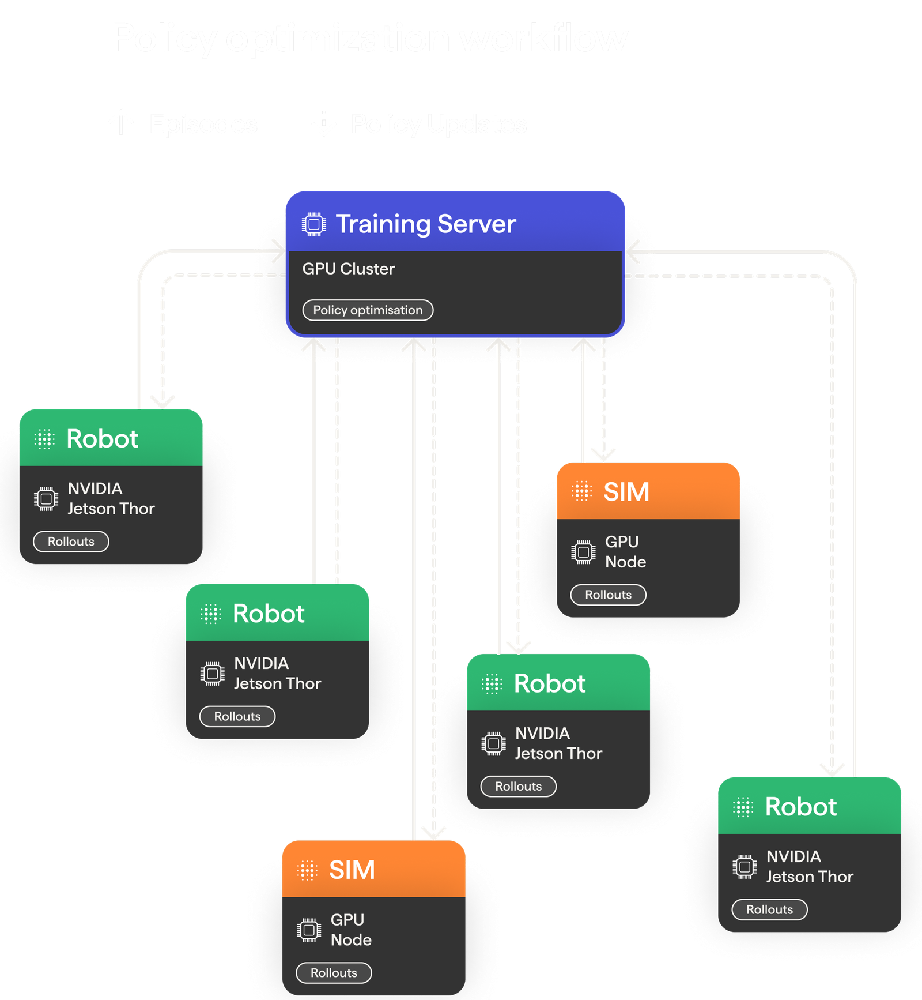
PPO on CFM：怎麼對流匹配 policy 算機率
CFM policy 出動作＝抽噪聲、積分一個學到的速度場（確定性 ODE）——RL 需要「policy 給這個動作多少機率」，而這個機率精確計算不可行。標準解法：把採樣 ODE 轉成 SDE，每個積分步注入高斯噪聲，每步就有可解的高斯密度 → log-prob 有了，噪聲順便當探索驅動。已發表的方法他們全試過（在 sim 大規模測）：
| 方法 | 在他們的規模/難度下 |
|---|---|
| ReinFlow | 零到微小的改善，不穩定 |
| Flow Policy Optimization | 最簡單的操作環境可以，難的不行 |
| Flow-GRPO | 工業任務可以，但極度樣本低效 |
| Reinforce Adjoint Matching | 表現同 Flow-GRPO，宣稱的樣本效率增益沒看到 |
| 最終採用：近似 Flow-SDE 的 PPO | 樣本效率、訓練穩定性、超參數魯棒性的最佳平衡；單一套超參數通吃所有模擬環境 |
- 噪聲只注入一個隨機選擇的積分步（效果好且訓練快）；最後一步永遠無噪聲（減少動作抖動）；噪聲量開到「不明顯劣化 policy 的最高檔」。
- 用回歸 critic 的 PPO，不用 critic-free。妙論證：馬達控制的 value estimation 比推理任務可解得多——「演化上古老、簡單的生物神經迴路就做得很好」。Flow-GRPO 那批 critic-free 方法樣本低效，缺準確 credit assignment 可能就是主因。policy 和 critic 權重完全分離，都從同一個 BC checkpoint 初始化；critic 讀一個可訓練 CLS token 過線性投影出 value。
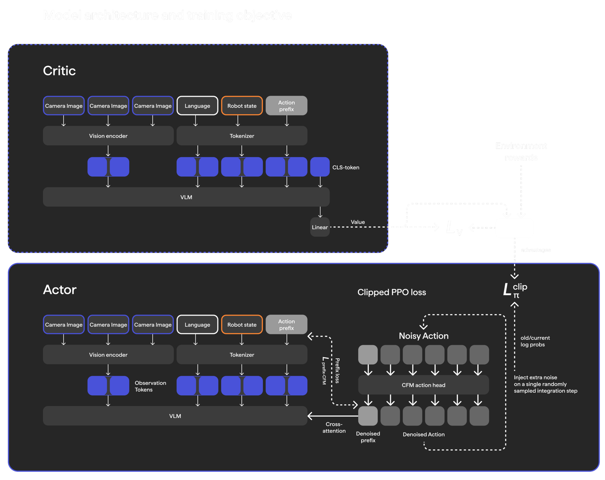
Prefix loss：一個沒人發表過的崩壞模式
P2 的設定：模型預測 2 秒 chunk（30Hz 動作），正常營運只執行前 200ms 就重規劃；非同步推論靠 P1 引入的 prefix conditioning 保持 chunk 交接平滑——BC 時模型學會「照抄 prefix + 平滑接續」。RL 一來，這個機制悄悄崩掉：
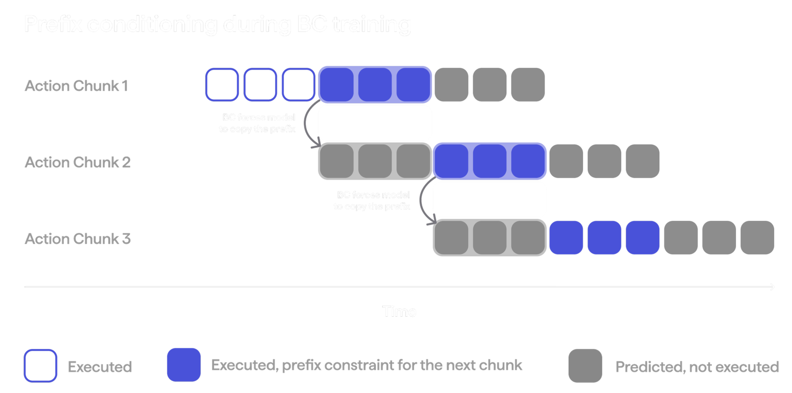
RL 只獎勵實際執行的動作，copied prefix 永遠拿不到 reward → 沒有東西逼模型繼續照抄 → 模型開始違反交接平滑性換取短期 reward → 下個 chunk 的 prefix 取自上個 chunk 的預測，預測一漂，餵回去的 conditioning 就出分佈，再把下個預測推得更歪——逐 chunk 複利放大。表現形式：不做任務的關節（閒置的手臂、軀幹）慢慢漂移，最後震盪、訓練發散。作者：「沒在別處看過這個失敗模式的描述，但任何用類似 action-prefix conditioning 的 RL 設定遲早會撞上。」
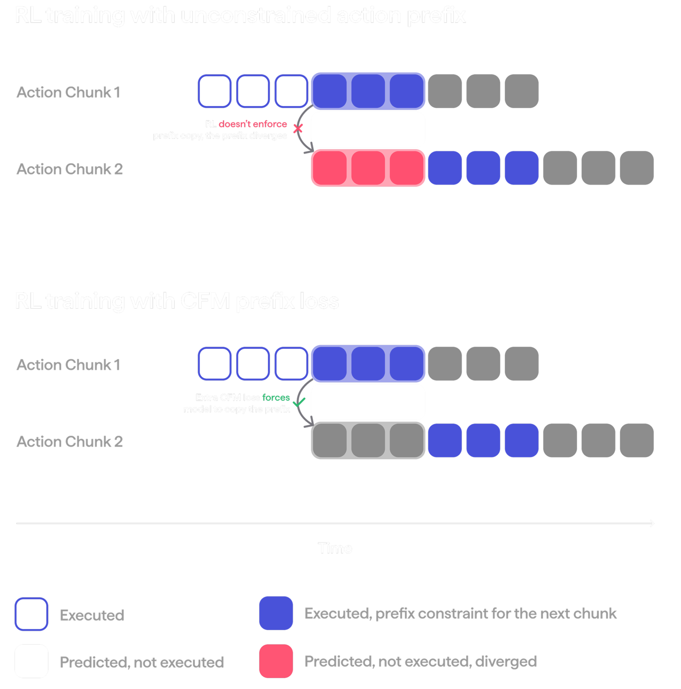
解法簡單漂亮：在 PPO 目標裡加一項 masked CFM 回歸損失，強制預測的 chunk 從給定 prefix 出發——不論 reward，所有 chunk 一律適用（這是個普適性質，不是任務目標）：
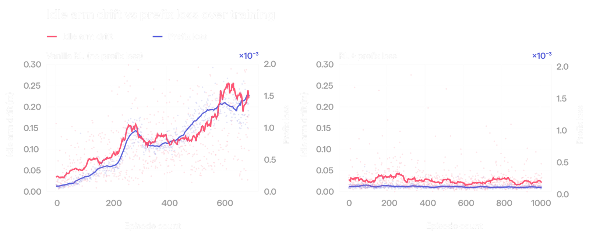
09P2真機工程實戰：安全反射、A/B 基線、數值鴻溝、速度課程
這節是全文含金量最高的部分——四個「教科書上沒有」的實戰課
① 探索期的硬體保命
重物 + 24/7 + RL 探索（有些新動作就是破壞性的）＝硬體損耗複利。兩道防線：
- 主動柔順（active compliance）：意外接觸時手臂讓步、降接觸力——但只在關節行程內有效，一到行程極限，力直接灌進結構。
- 痛覺反射：監控手腕 wrench（力/力矩），超過安全閾值立刻停止執行，然後倒放最近的指令快速縮手。因為 episode 在安全違規時終止，RL 隱式學會少觸發反射——BC 做不到這件事：模仿只能對「已經施加的力」反應，RL 學會一開始就不施加過大的力。
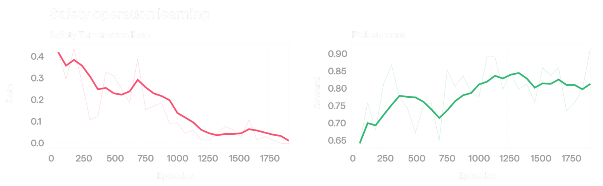
Reward 設計刻意稀疏而通用：核心是單一二元任務成功 reward + 少數容易偵測的可恢復錯誤懲罰（如 misgrasp，幫 credit assignment）；不加速度密集項——discount 因子本身就是時間壓力；安全走隱式（違規即終止）。沒有任何任務特定項 → 新能力的 RL 設定只要「定義成功 + 挑要顯式懲罰的錯誤類型」。密集 shaping 那條路被明確棄用：要任務特定實驗、容易被鑽漏洞、還常需要真實世界拿不到的特權資訊（物體座標）。
② 真實環境會漂移——線上 A/B 基線
「reward 從 0.6 升到 0.75」＝訓練有效？不一定。真實環境非平穩：日夜光照循環、操作員換班（重置環境的手勢各有偏差）、硬體磨損。解法：約 10% 的 episode 用凍結的參考 policy（RL 前的起始 policy）跑，只用於監控——線上 A/B 測試。下面三張圖是完整的方法論教學：
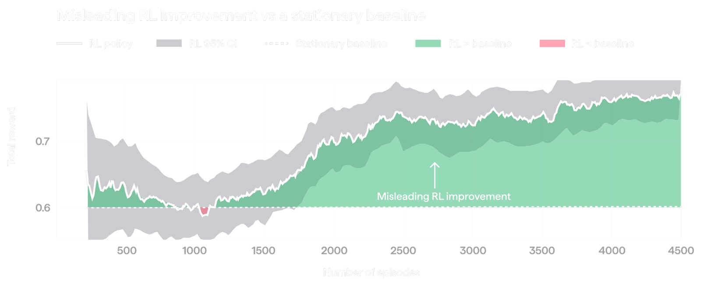
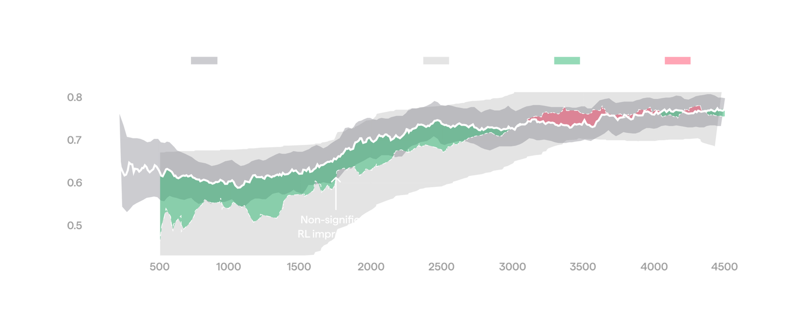
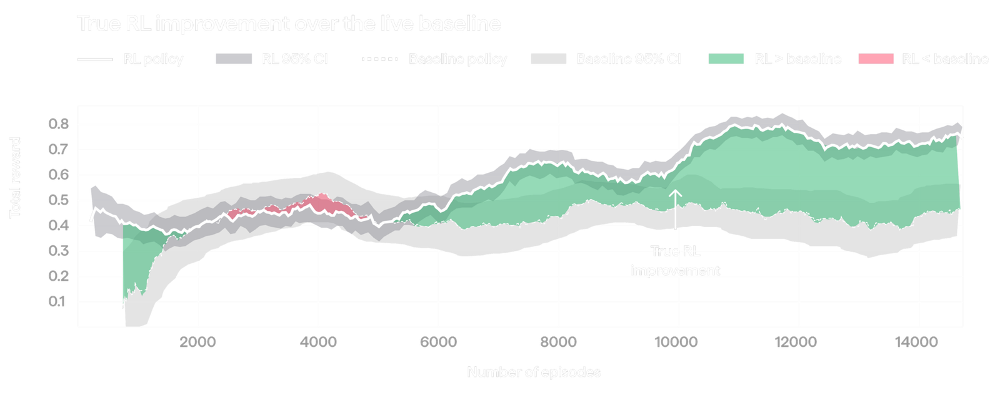
③ Sampler-trainer gap：edge 與雲的數值鴻溝
PPO 的每個梯度項都掛著 importance ratio（當前 policy 機率 ÷ 採樣時機率），ratio 錯＝更新錯，容易發散。而他們的 rollout 在 Jetson Thor 上跑、訓練在 Hopper/Blackwell 上跑——不同編譯器、kernel、數值精度、隨 batch size 變化的運算路徑，加上推論棧為延遲做了激進優化 → 同一份權重、同一個動作，兩邊算出的機率不一樣。徹底消除（batch-invariant kernel、對齊 dtype……）只能做一半，因為 sampler 必須釘死在生產推論棧上——RL 要在部署條件下訓練。
解法：不用推論端回報的機率，在 trainer 端用計算梯度的同一份模型重算 log-prob 進 importance ratio；同時持續監控兩邊差距、反過來調推論棧讓差距別太大（差距越大，更新越 off-policy 越噪）。
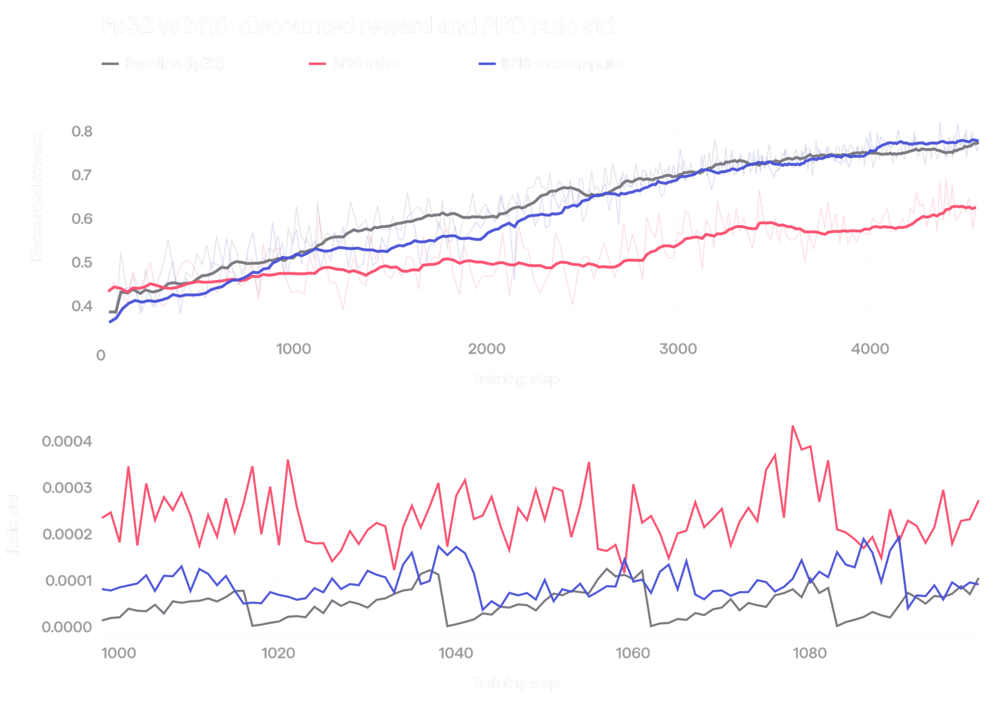
④ 速度課程：把「加速」變成定向探索
policy 輸出的是一段目標位姿序列，想多快播就多快播（他們稱執行頻率為 policy 的 FPS，超過資料採集頻率＝sport mode）。單獨拉 FPS 到某個點品質就崩（世界不會跟著加速）；但配上 RL：拉高 FPS → 接受品質下跌 → 在快的狀態下繼續訓練 → policy 學會新速度下的時序與修正。這其實是一種朝「更快行為」的定向探索——ODE-to-SDE 的動作噪聲只做局部探索，快的行為靠隨機亂踩很難踩到。經驗法則：速度要小步階梯式拉，一次跳太大，分佈偏移大到 reward 崩過 RL 能救回的點。
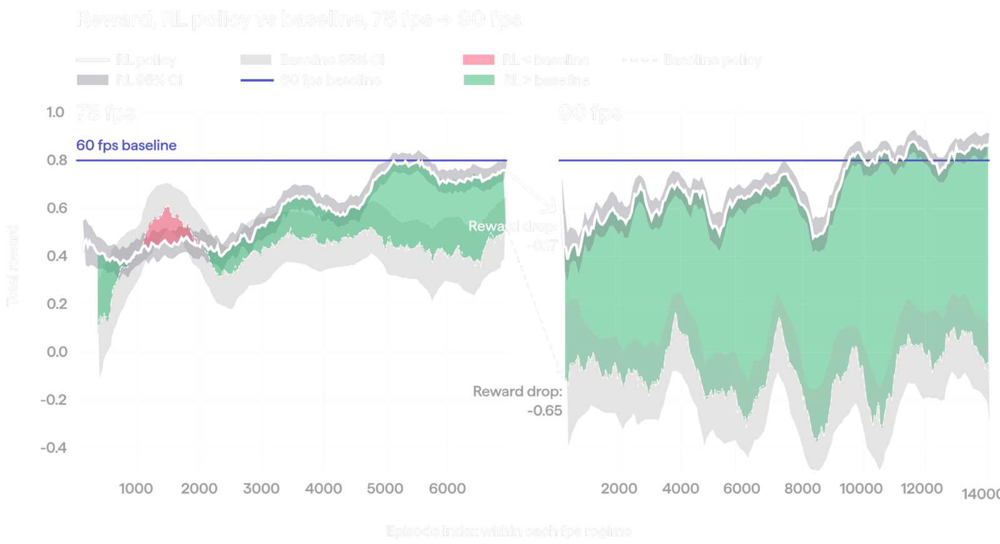
10P2三個生產任務的成績單 + 兩個驚喜
全部在雙臂 Alpha 系統上 · 起點都是遙操作資料訓的 BC baseline · 同一套配方零任務客製
| 任務 | 機器時間 | 吞吐 | 成功率 | 週期/時長 |
|---|---|---|---|---|
| 機台上料（bin 裡撿軸承環→輸送帶） | ~5 天 | 291 → 412 環/hr（+42%） | 揀取 0.60 → 0.67 | 27.2s → 19.5s |
| 物品交付（雜亂 tote 撿物→遞給人） | ~3 天 | +85% | 80% → 98%（失敗 ↓10 倍） | 時長 −35% |
| 雙臂搬箱（任意朝向的 tote 雙臂舉起） | ~4 天 | 122 → 279 箱/hr（2.3 倍） | 77.6% → 98.9%（失敗 ↓~20 倍） | 22.9s → 12.8s（−44%） |
機台上料：只練「揀」，整條任務跟著快
任務兩段：從雜亂 bin 揀環（難）、搬到輸送帶（簡單），同一個 BC policy 端到端執行。RL 只練揀取段（它有自動化 reward），速度課程 60→75→90 FPS。每次提速，regrasp 率先上升（手臂比夾爪快，「還沒夾穩就走」），RL 再把抓取可靠性練回來。最終 +42% 吞吐：週期 27.2→19.5 秒、揀取成功率 0.60→0.67，cycle time 的信賴區間也收緊——不只平均變快，慢的離群值也變少。
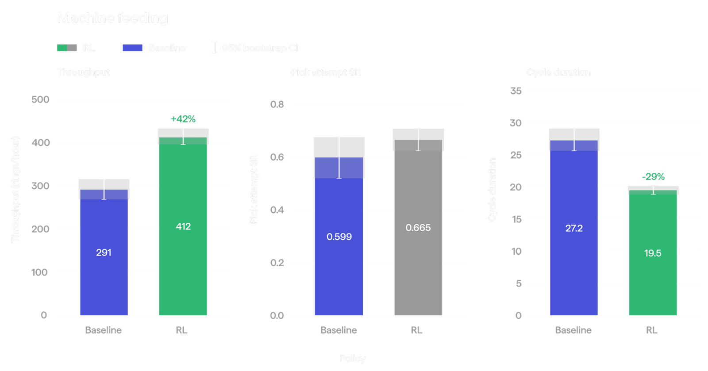
物品交付：只練水瓶，罐頭跟著變好
服務場景：從雜亂 tote 抓物遞給站在面前的人，人接走算成功（評測 30 秒逾時）。BC baseline 的訓練資料涵蓋多種物體，RL 期間只練水瓶，三天。結果：水瓶上全指標改善（吞吐 +85%、時長 −35%、成功率 80→98%）；然後拿 RL 沒見過的物體來考——
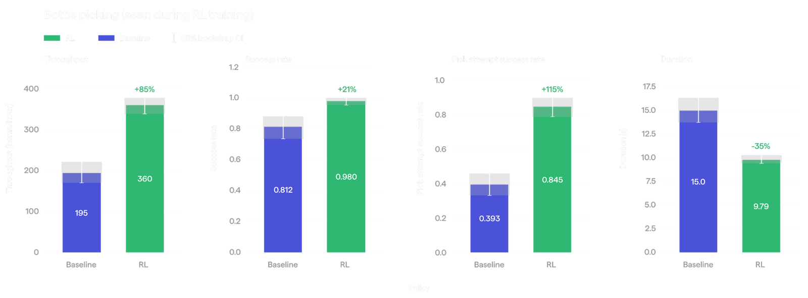
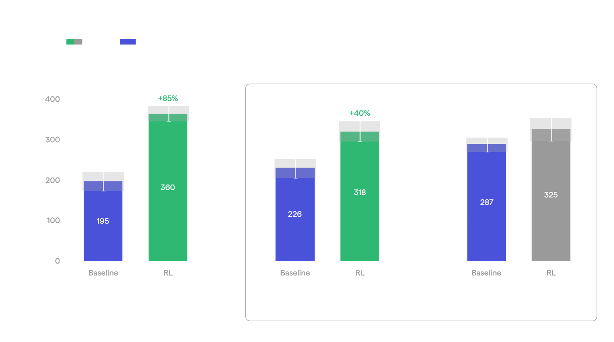
雙臂搬箱：同一套配方，零修改
兩臂同時作用在同一個物體上的協調，是前兩個任務都沒有的。同一個 PPO-on-CFM 目標、同一個稀疏 reward、同一組超參數、同一個速度課程，一字不改，四天：吞吐 122→279 箱/hr，時長 22.9→12.8 秒，成功率 77.6→98.9%。「方法開箱即用地處理了一個實質不同的任務」——這是他們宣稱 Ascend 具備通用性、能加速產品路線圖的底氣。
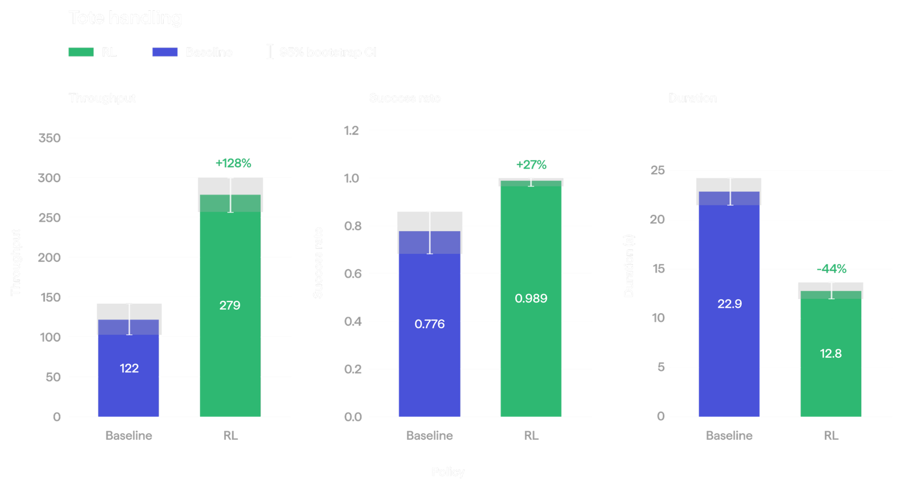
Discussion 裡的四個戰略宣言
- BC 的角色改變：有 RL 在後面，BC 不用再產出部署級 policy，只要「覆蓋對的行為模式」——RL 壓制無效的、放大並打磨有效的。
- 車隊出貨後繼續學：部署車隊跑的就是今天這套分離式 RL loop；主管介入＝該避免的失敗標記；資料收集不再是獨立活動，每台部署機器人都是 rollout worker。
- RL 當資料引擎：所有 rollout 都存檔進下一代模型的預訓練混合——真機收的，零 embodiment gap。policy 變好 → 資料變好 → 基模變強 → 下輪 RL 更快更便宜，複利。
- 24/7 RL＝部署預演：硬體在客戶之前先被當部署條件操，設計與營運問題趁便宜的時候浮出來。
11合讀：和 Anthropic「Claude Plays Robotics」對照
同一個月讀的兩份材料，剛好是同一張圖的兩面（Anthropic 篇導讀）
| Anthropic（評測視角） | Humanoid KinetIQ（產品視角） | |
|---|---|---|
| 問的問題 | 通用 LLM 接上機器人能做什麼？（安全評估） | 怎麼把機器人做到 99.9% 可部署？（商業交付） |
| LLM 的位置 | 被測物：直接控制全滅，監督 pretrained policy 才有戲 | System 2：直接採用 frontier model 當單機執行層——正是 Anthropic 驗證「可行」的那個位置 |
| 低階控制 | LLM 寫 Python 控制器，Go2 平衡 ~2 秒 | 不讓大模型碰：IK + RL 步態 50Hz，專職專層 |
| VLA 誰說了算 | LLM 監督 MolmoAct，量測 follow rate 與否決品味 | System 2 監控 System 1 的 value 訊號（time-to-completion），決定重試/換招/上報 |
| latency 觀 | 即時控制要 83Hz，API 推論 0.2–0.4Hz → 暫停模擬器測上限 | 用架構吃掉 latency：chunking + prefix conditioning + 非同步推論，離散符號層才給慢模型 |
| 從經驗學習 | in-context、短視野（最近 6–12 步），重試才變強 | 權重級：真機 PPO 直接改 policy；部署後規劃把主管介入當 reward |
12重點筆記：對狀態偵測專案的啟示
連續視覺流 + 下層 FSM 的人，從這兩篇能搬走什麼